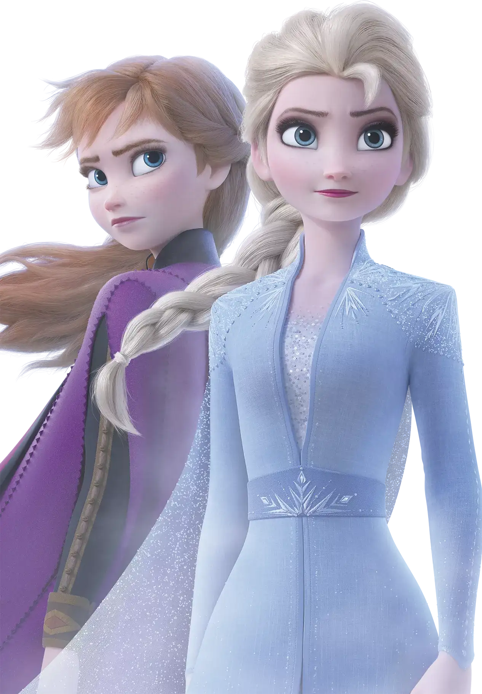

🏠 首页 · 百科首页
冰雪奇缘百科全书
一部关于《冰雪奇缘》的中文百科：电影正典、官方小说、艺术设定集与北欧文化的深度整理。
14
百科卷
344+
百科页
317+
设定集图版
2+4
电影与番外
❄️ 这里是一座为《冰雪奇缘》爱好者搭建的百科全书：14 个卷，从艾莎与安娜的角色档案，到魔法与世界的设定考据，从官方小说的世界线到两本艺术设定集的逐页精读。所有内容均整理自电影正典与官方出版物，图片出自官方图库与设定集原书扫描。



📚 十四卷总览
❄️艾莎卷从自我隔离到第五灵：艾莎的全部故事、造型与魔法→🌻安娜卷从天真少女到阿伦黛尔女王：勇气与爱的成长史→👥角色卷克里斯托夫、雪宝、汉斯、四灵等全部角色的档案→🌍世界卷阿伦黛尔、魔法森林、暗海与阿塔霍兰的地理与设定→✨魔法卷冰雪魔法的规则、边界与四灵元素体系→📖故事卷两部电影的剧情、分镜与七本官方小说的世界线→💭主题卷恐惧与爱、自我认同、姐妹羁绊的深度解读→🕐时间线卷从鲁纳德时代到安娜加冕的完整编年史→🎬制作卷创作幕后：剧本、分镜、美术与技术的全流程→🏮文化卷北欧原型：挪威、萨米文化与民俗考据→🎵歌曲卷从 Let It Go 到 Show Yourself 的音乐全解析→📚小说卷七本官方小说的故事、设定与正典层级→📖设定集卷两本官方艺术设定集的逐页精读→🎨图鉴卷角色、场景与书装的视觉图鉴→
🧭 如何使用本百科
顶部一行是 14 个卷的标签页；进入任何一卷后，左侧是本卷的手风琴目录，右侧是当前页的章节目录。顶部工具栏提供随机跳转、字母索引与标签云。每页底部都标注了资料来源。
📌 本页要点
你正在阅读《首页》卷的「冰雪奇缘百科全书」。本页由电影正典、官方设定集与官方小说综合梳理，可作为该主题的速查入口；右侧目录可快速跳转到本页各小节。